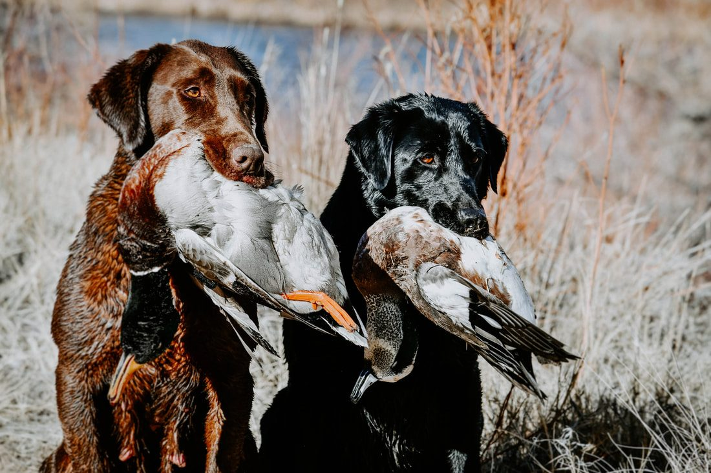
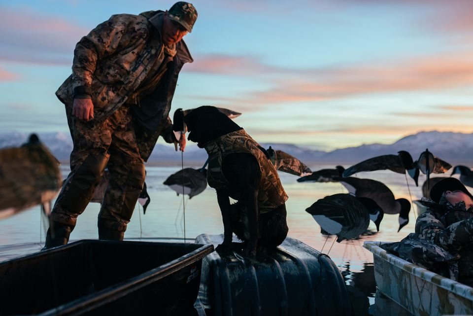
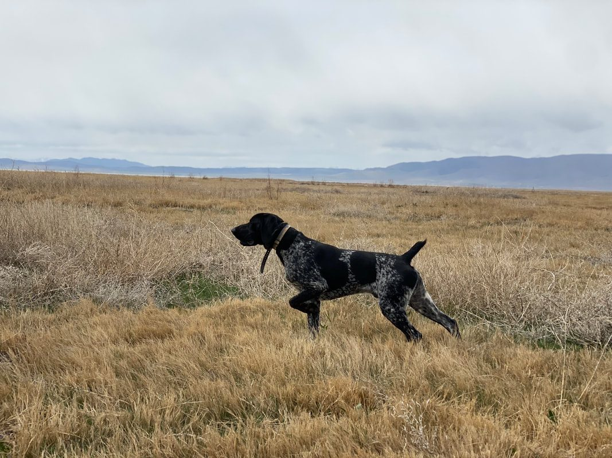

Many gun-shy dogs can improve significantly, but the outcome depends on the dog, the severity, the history, and how the problem is addressed. There is no honest way to guarantee that every dog can be completely cured.
How well a dog responds depends on several things: how severe the fear is, what originally caused it, the dog’s prey or retrieving drive, and how patiently the dog is reintroduced to gunfire.
I’ve worked with dogs that made very good progress in about a month of consistent training. I’ve also worked with dogs whose gun issues were severe enough that the process took several months.
This page is the honest answer. The step-by-step work lives in How to Fix a Gun-Shy Dog. If the dog just got scared, start with what to do right now.
The biggest thing I tell owners is this:
The process needs to be gradual, positive, and based on what the dog is telling you.
Does gun shyness get worse?
It can.
If the dog already believes gunfire is something to fear, more uncontrolled shooting — hunting, the range, another “test” — can make that association stronger. That is why I do not try to fix a gun-shy dog by simply shooting around it more.
Stopping the bad reps is not the same as finishing the work. It just keeps you from digging a deeper hole.
Are some cases easier to fix than others?
Yes.
Dogs with decent bird or retrieving drive, one bad experience, and an owner who will actually stop shooting around them often give us something to build from. Dogs with a long history of close shots, very little drive, or a fear that is already bigger than the bird are harder.
Signs a dog may respond well:
- Still wants the bird, the retrieve, or the work — just not the gun.
- The scare was recent, not years of stacking bad nights.
- The owner can stop adding more gunfire.
- The dog still acts like itself away from shots.
None of that is a guarantee. It is a better starting point than a dog that has already quit the work completely.
First, make sure the dog really is gun shy
When someone tells me, “My dog is gun shy,” the first thing I ask is: What happened?
I want to know what experience made the owner believe the dog has a problem with gunfire.
Did someone take the dog to a shooting range?
Did they take a young dog hunting and shoot directly over it?
Did the dog have a bad experience with fireworks or another loud noise?
What did the dog do when the shot went off?
One misconception is that a gun-shy dog will always run away. That’s not true.
A dog may stay right beside its owner and still have a serious problem with gunfire.
What I’m really looking for is a change in the dog’s normal demeanor or behavior.
A dog may be showing gun-shy behavior if it:
- Runs away or heads back toward the truck.
- Stops hunting after a shot.
- Stops ranging away from the owner.
- Begins walking behind or directly beside the handler instead of working the field.
- Stops retrieving.
- Loses interest in birds.
- Becomes unusually quiet, tense, or still.
- Seems more concerned with the sound of the gun than with the activity it was previously enjoying.
If I’m watching a dog work around gunfire, I don’t just ask whether the dog stayed nearby. I want to see whether the dog is still being itself.
Is it happy? Is its tail moving normally? Is it retrieving? Is it hunting? Is it interested in birds? Is its energy the same?
That’s the standard I use.
Don’t “test” a dog to see if it is gun shy
One of the biggest mistakes I see hunters make is taking a young dog out and shooting around it just to see what happens.
They’ll say they want to “check whether the dog is gun shy.”
The problem is that the test itself can create the gun-shy behavior.
People get excited. They have a new hunting dog and want to get it into the field as quickly as possible. They throw a bumper, shoot a gun, or take the dog hunting and fire over it without first building a positive association with gunfire.
Sometimes the dog handles it. Sometimes it doesn’t. And when it doesn’t, an experience that lasted only a few seconds can create a problem that takes weeks or months to work through.
I would much rather introduce gunfire slowly and build confidence than find out the hard way that we moved too quickly.

How the work actually goes
When possible, I begin with something the dog already finds extremely positive — birds, retrieving, prey drive, movement. At that stage there is no gunfire. I want the dog genuinely excited before anyone shoots.
Then we bring a shooter in far enough away that the shot is barely noticeable. The dog should stay on the bird. If demeanor changes, we back up. The dog determines the timeline, not a calendar.
That field process — and what to do when the dog hits a wall around 30 or 40 yards — is the rest of How to Fix a Gun-Shy Dog. I am not going to repeat the whole protocol here.

What if birds and retrieving aren’t enough?
Some dogs come to us with gun shyness already deeply established. Others have some bird drive, but the fear of gunfire is stronger.
I’ve worked with dogs that did very well while the gun was far away, but once the shooter reached around 30 or 40 yards, the dog would begin shutting down. We could get the dog to a certain point, but we couldn’t break through that wall.
Situations like that are one of the reasons I created Gunshy Fix.
Gunshy Fix uses calming music and gradually introduces the sound of gunfire into that music. Instead of beginning with a loud gunshot, the dog starts in a calm environment with a soundtrack designed to be comfortable. Gunfire is then introduced progressively through the lessons.
The goal is to help change the dog’s association with the sound before asking it to deal with live gunfire again in the field. Lesson order is on How It Works. The field process after that is How to Fix a Gun-Shy Dog.
Why simply playing loud gunshots is different
Some owners hear the word “desensitization” and assume it means exposing the dog to a lot of gunfire until the dog eventually gets used to it. That’s not the approach I recommend.
Taking a gun-shy dog to a shooting range, tying the dog nearby, or repeatedly firing close to the dog can begin at an intensity that is already far above what that dog can comfortably handle. If the dog is frightened during those repetitions, you may simply be reinforcing the fear.
Proper desensitization should start at a level the dog can tolerate comfortably and progress gradually. The dog’s demeanor tells you whether you’re moving at the right pace.
How long can rehabilitation take?
There isn’t one answer for every dog.
A dog with average to above-average prey drive that is worked consistently may make very good progress within about a month. In our training program, we’re typically working dogs Monday through Friday, which gives us a lot of repetition and consistency.
A dog with lower drive or a severe history of gun-related fear can take several months.
That’s why I caution owners against setting a deadline. Watch the dog instead of the calendar. Trying to rush the process because hunting season is approaching is one of the easiest ways to undo progress. I cover ranges more fully in How Long Does It Take to Fix a Gun-Shy Dog?
Can a gun-shy dog relapse?
Yes.
Even after a dog appears to be doing well, I recommend continuing to create positive experiences around gunfire.
If we’ve worked a dog successfully through its gun issues, I don’t want the owner to avoid gunfire for six months and then suddenly take the dog hunting and shoot directly over it.
Continue layering positive gunfire experiences into the dog’s life. Take the dog out regularly. Keep the exposure positive. Keep watching the dog’s attitude.
Over time, we’re trying to make that positive association with gunfire more and more established.
When should you get a professional trainer involved?
Working a dog through live gunfire can require more than most owners have available. You may need:
- Birds.
- Suitable training property.
- A safe place where firearms can legally be used.
- One person handling the dog or throwing birds.
- Another person operating the gun at the correct distance.
- Someone experienced enough to recognize subtle changes in the dog’s body language.
If a dog already has severe gun-shy behavior, I often recommend starting with Gunshy Fix at home. Once the dog is comfortable working through all of the lessons, a professional trainer can help transition the dog back into birds and live gunfire. When that setup is the limiting factor, see When Does a Gun-Shy Dog Need Professional Training?
For some dogs, that combination works better than expecting an owner to reproduce an entire field-training setup by themselves.
Can a hunting dog return to gunfire?
Sometimes, yes.
I have worked with dogs that had good hunting ability but stopped working when gunfire was introduced. With patience and work at the dog’s pace, some of those dogs get back to a point where the shot is no longer shutting them down.
I don’t tell owners that every gun-shy dog can be completely fixed.
What I can say is that I’ve seen dogs make significant progress when owners are patient, the dog has some retrieving or prey drive, and the process is approached correctly.
When someone calls me feeling like they ruined their dog because they introduced gunfire too quickly, I explain the options we have available. Then we start working the problem.
Some dogs respond relatively quickly. Some take a long time. Some may never become exactly the dog the owner originally imagined.
The goal is to use everything available in our training experience and knowledge base to give that dog the best chance possible.
The most important thing to remember
If your dog is already showing signs of gun shyness, more gunfire is not automatically the answer.
Slow down. Pay attention to your dog’s demeanor. Build positive experiences first. Introduce sound gradually. If your dog’s behavior changes, back up.
And don’t measure success by whether the dog simply stays beside you while shots are being fired.
You want a dog that can hear gunfire and continue being the same happy, confident dog it was before the shot.
That’s the goal.
If it can still be worked, here is the process
The honest answer is above. The work itself — stop making it worse, rebuild around something the dog loves, bring sound back below the dog’s threshold — is How to Fix a Gun-Shy Dog.
Gunshy Fix is the at-home sound progression for dogs that already have a negative association. How to run the lessons is on How It Works.